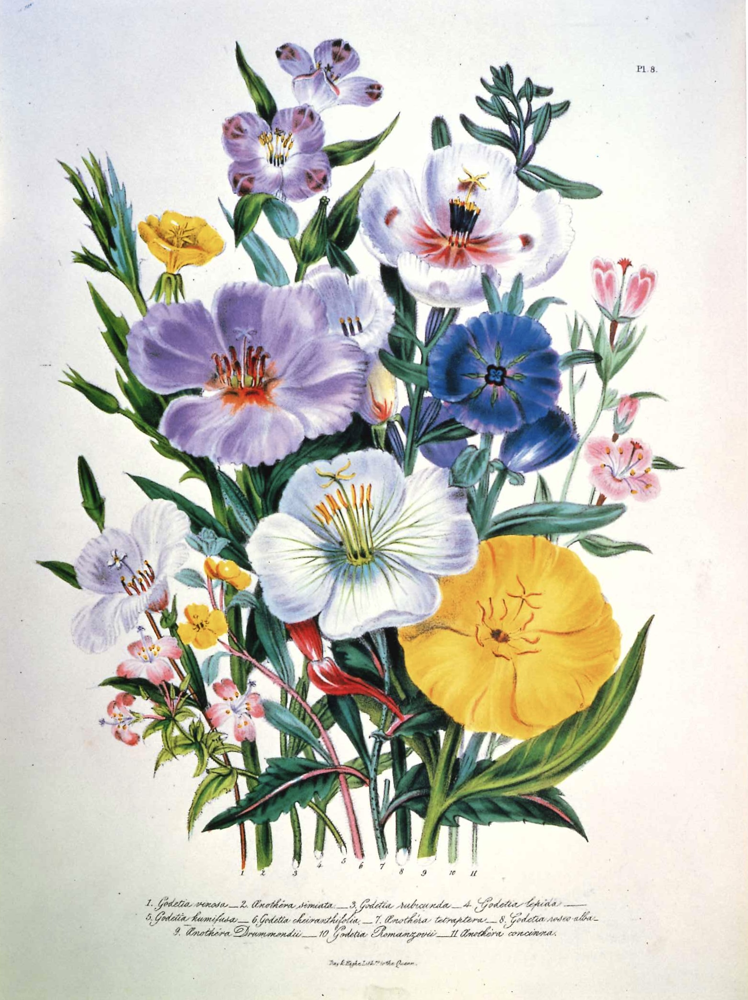

作品名 「ゴデチア」
花言葉 「変わらぬ愛」「お慕いいたします」「移り気」
ゴデチア
「変わらぬ愛」
和名では「色待宵草（イロマツヨイグサ）」と言い、花姿が同じアカバナ科のマツヨイグサに似ていて、花色が豊富なことに由来するともいわれます。花言葉の「変わらぬ愛」は、春から夏に季節が移り変わっても、美しい花を咲かせていることに由来するともいわれます。
ゴデチア
ジェイン・ウェブ・ラウドン
ジェイン・ウェブ・ラウドンは、イギリスの画家であり、19世紀の女性の最初のサイエンティフィック・イラストレーターとして知られています。彼女は、自分自身の教育のために技術的な本を書き、さらには若い女性の教育を目的とした少女向けの科学漫画も作りました。彼女の作品は、当時の新しい技術や科学的な知識を視覚的にわかりやすく表現している。
| 作品名 | ゴデチア |
| 作者 | ジェイン・ウェブ・ラウドン |
| 制作年 | 1840年 | 所蔵 | ピッツバーグ、ハント財団 |